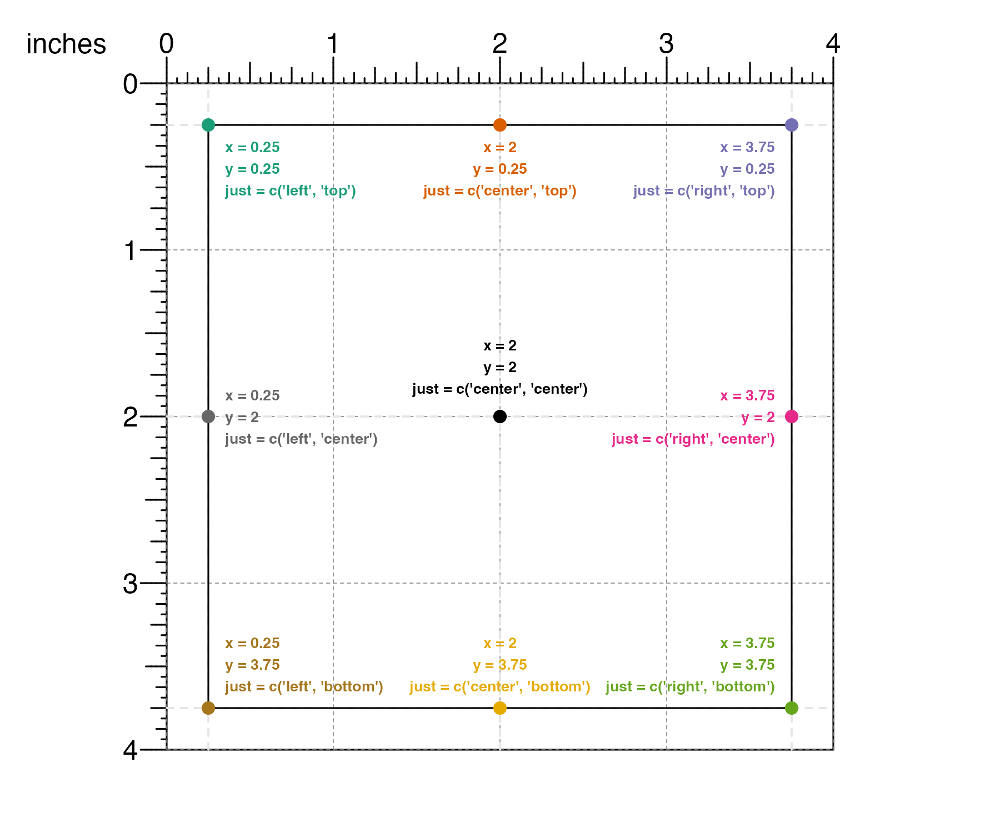
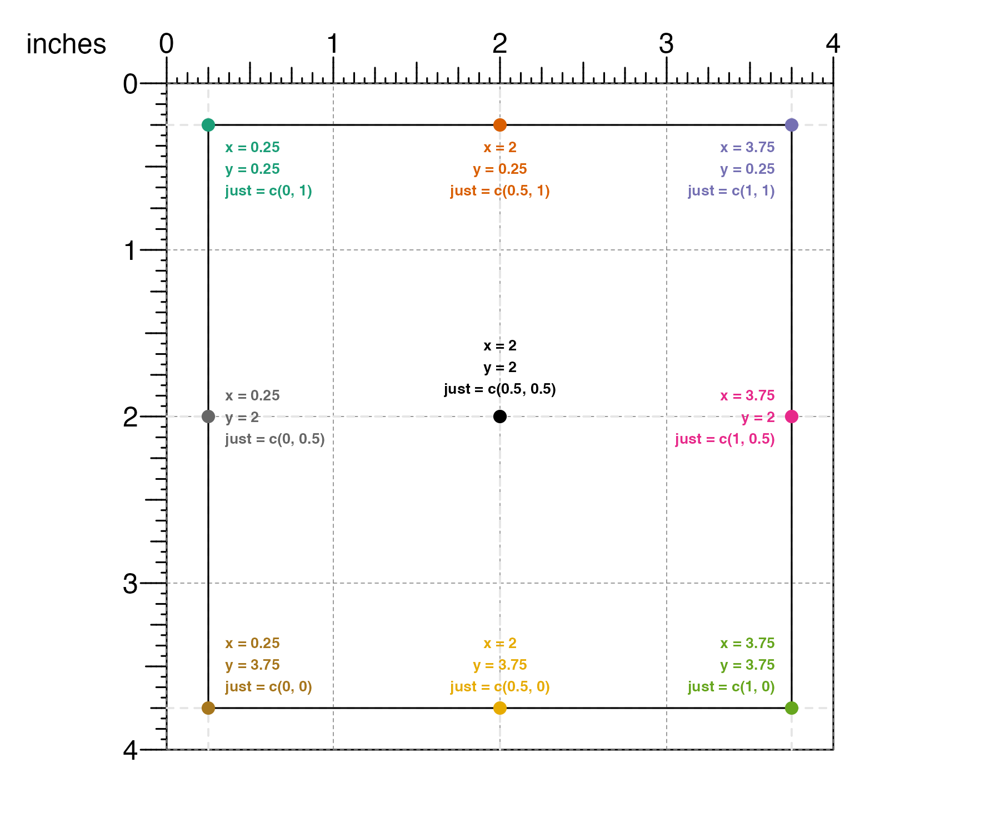

plotgardener uses a coordinate-based plotting system to define the size and location of plots. This system makes the plotting process intuitive and absolute, meaning that plots cannot be squished and stretched based on their relative sizes. This also allows for precise control of the size of each visualization and the location of all plots, annotations, and text.
All plotgardener page functions begin with the page prefix.
Users can create a page in their preferred size and unit of measurement using pageCreate(). Within this function the user can also set gridlines in the vertical and horizontal directions with xgrid and ygrid, respectively. By default these values are set to 0.5 of the unit. In the following example we demonstrate creating a standard 8.5 x 11 inch page:
pageCreate(width = 8.5, height = 11, default.units = "inches")Or we could create a smaller sized page in a different set of units with different gridlines:
pageCreate(width = 8, height = 8, xgrid = 1, ygrid = 1, default.units = "cm")We could turn off gridlines entirely by setting xgrid and ygrid to 0:
pageCreate(
width = 3, height = 3, xgrid = 0, ygrid = 0,
default.units = "inches"
)If we want more specific gridlines on our page, we can use the pageGuideHorizontal() and pageGuideVertical() functions:
pageCreate(width = 3, height = 3, default.units = "inches")
## Add a horizontal guide at y = 2.25 inches
pageGuideHorizontal(y = 2.25, default.units = "inches")
## Add a vertical guide at x = 0.75 inches
pageGuideVertical(x = 0.75, default.units = "inches")
We can also remove all guidelines from the plot once we are finished using guides by using the pageGuideHide() function:
## Create page
pageCreate(width = 3, height = 3, default.units = "inches")
## Remove guides
pageGuideHide()Coordinate systems and units
plotgardener is compatible with numerous coordinate systems, which are flexible enough to be used in combination. Brief descriptions of the most commonly used plotgardener coordinate systems are as follows:
| Coordinate System | Description |
|---|---|
| “npc” | Normalized Parent Coordinates. Treats the bottom-left corner of the plotting region as the location (0,0) and the top-right corner as (1,1). |
| “snpc” | Squared Normalized Parent Coordiantes. Placements and sizes are expressed as a proportion of the smaller of the width and height of the plotting region. |
| “native” | Placements and sizes are relative to the x- and y-scales of the plotting region. |
| “inches” | Placements and sizes are in terms of physical inches. |
| “cm” | Placements and sizes are in terms of physical centimeters. |
| “mm” | Placements and sizes are in terms of physical millimeters. |
| “points” | Placements and sizes are in terms of physical points. There are 72.27 points per inch. |
We can set the page in one coordinate system, but then place and arrange our plots using other coordinate systems. For example, we can set our page as 3 x 3 inches:
pageCreate(width = 3, height = 3, default.units = "inches")But we can then switch to npc coordinates to plot something in the center of the page at (0.5, 0.5) npc. The unit() function allows us to easily specify x, y, width, and height in combinations of different units in one plotting function call.
plotRect(
x = unit(0.5, "npc"), y = unit(0.5, "npc"), width = 1, height = 1,
default.units = "inches"
)The native coordinate system is particularly useful for annotation functions that can plot relative to the genomic scales of a plot. For example, we can use annoText() to annotate some text at a specific genomic location in a plot:
pageCreate(
width = 5, height = 1.5, default.units = "inches",
showGuides = FALSE, xgrid = 0, ygrid = 0
)
library(plotgardenerData)
data("IMR90_ChIP_H3K27ac_signal")
signalPlot <- plotSignal(
data = IMR90_ChIP_H3K27ac_signal,
chrom = "chr21", chromstart = 28000000, chromend = 30300000,
assembly = "hg19",
x = 0.5, y = 0.25, width = 4, height = 0.75, default.units = "inches"
)
annoGenomeLabel(plot = signalPlot, x = 0.5, y = 1.01)
## Annotate text at average x-coordinate of data peak
peakScore <- IMR90_ChIP_H3K27ac_signal[which(
IMR90_ChIP_H3K27ac_signal$score == max(IMR90_ChIP_H3K27ac_signal$score)
), ]
peakPos <- round((min(peakScore$start) + max(peakScore$end)) * 0.5)
annoText(
plot = signalPlot, label = format(peakPos, big.mark = ","), fontsize = 8,
x = unit(peakPos, "native"), y = unit(1, "npc"),
just = "bottom"
)Working with plot objects
In plotgardener all plot objects are boxes, with user-defined positions and sizes. All plot objects can be placed on a page using the placement arguments (e.g. x, y, width, height, just, default.units, …). The page sets the origin of the plot at the top left corner of the page. By default, the x and y arguments place the top-left corner of a plot in the specified position on the page while the width and height arguments define the size of the plot.
For example, if users want the top-left corner of their plot to be 0.5 inches down from the top of the page and 0.5 inches from the left…
and the plot to be 2 inches wide and 1 inch tall…
plotgardener can make the plot with these exact dimensions:
## Create page
pageCreate(width = 3, height = 3, default.units = "inches")
## Plot rectangle
plotRect(
x = 0.5, y = 0.5, width = 2, height = 1,
just = c("left", "top"), default.units = "inches"
)plotgardener also provides the helper function pagePlotPlace() for placing plot objects that have been previously defined:
## Load data
library(plotgardenerData)
data("IMR90_ChIP_H3K27ac_signal")
## Create page
pageCreate(width = 3, height = 3, default.units = "inches")
## Define signal plot
signalPlot <- plotSignal(
data = IMR90_ChIP_H3K27ac_signal,
chrom = "chr21", chromstart = 28000000, chromend = 30300000,
assembly = "hg19",
draw = FALSE
)
## Place plot on page
pagePlotPlace(
plot = signalPlot,
x = 0.5, y = 0.5, width = 2, height = 1,
just = c("left", "top"), default.units = "inches"
)
and pagePlotRemove() for removing plots from a page:
# Load data
library(plotgardenerData)
data("IMR90_ChIP_H3K27ac_signal")
## Create page
pageCreate(width = 3, height = 3, default.units = "inches")
## Plot and place signal plot
signalPlot <- plotSignal(
data = IMR90_ChIP_H3K27ac_signal,
chrom = "chr21", chromstart = 28000000, chromend = 30300000,
assembly = "hg19",
x = 0.5, y = 0.5, width = 2, height = 1,
just = c("left", "top"), default.units = "inches"
)
## Remove signal plot
pagePlotRemove(plot = signalPlot)
These functions give the users additional flexibility in how they create their R scripts and plotgardener layouts.
Using the just parameter
While the x, y, width, and height parameters are relative to the top-left corner of the plot by default, the just parameter provides additional flexibility by allowing users to change the placement reference point. The just parameter accepts a character or numeric vector of length 2 describing the horizontal and vertical justification (or reference point), respectively.
The just parameter can be set using character strings "left", "right", "center", "bottom" and "top":

Or it can be set using numeric values where 0 means left/bottom, 1 means right/top, and 0.5 means center:

This is particularly useful when an object needs to be aligned in reference to another plot object or page marker. For example, in the Hi-C plot below we might want to align the top-right corner of the heatmap legend to the 3-inch mark. There is no need to calculate the top-left position (i.e. 3 inches - (legend width)) to determine where to place the heatmap legend. Instead we can change the just parameter to just=c('right', 'top'):
## Load example Hi-C data
library(plotgardenerData)
data("IMR90_HiC_10kb")
## Create a plotgardener page
pageCreate(width = 3.25, height = 3.25, default.units = "inches")
## Plot Hi-C data with placing information
hicPlot <- plotHicSquare(
data = IMR90_HiC_10kb,
chrom = "chr21", chromstart = 28000000, chromend = 30300000,
assembly = "hg19",
x = 0.25, y = 0.25, width = 2.5, height = 2.5, default.units = "inches"
)
## Add color scale annotation with just = c("right", "top")
annoHeatmapLegend(
plot = hicPlot,
x = 3, y = 0.25, width = 0.1, height = 1.25,
just = c("right", "top"), default.units = "inches"
)Session Info
sessionInfo()
#> R version 4.1.2 (2021-11-01)
#> Platform: x86_64-apple-darwin17.0 (64-bit)
#> Running under: macOS Big Sur 10.16
#>
#> Matrix products: default
#> BLAS: /Library/Frameworks/R.framework/Versions/4.1/Resources/lib/libRblas.0.dylib
#> LAPACK: /Library/Frameworks/R.framework/Versions/4.1/Resources/lib/libRlapack.dylib
#>
#> locale:
#> [1] en_US.UTF-8/en_US.UTF-8/en_US.UTF-8/C/en_US.UTF-8/en_US.UTF-8
#>
#> attached base packages:
#> [1] grid stats graphics grDevices utils datasets methods
#> [8] base
#>
#> other attached packages:
#> [1] plotgardenerData_1.0.0 plotgardener_1.1.2
#>
#> loaded via a namespace (and not attached):
#> [1] MatrixGenerics_1.6.0 Biobase_2.54.0
#> [3] sass_0.4.0 jsonlite_1.7.2
#> [5] bslib_0.3.1 assertthat_0.2.1
#> [7] highr_0.9 stats4_4.1.2
#> [9] yulab.utils_0.0.4 GenomeInfoDbData_1.2.7
#> [11] Rsamtools_2.10.0 yaml_2.2.1
#> [13] pillar_1.6.4 lattice_0.20-45
#> [15] glue_1.5.1 digest_0.6.29
#> [17] GenomicRanges_1.46.1 RColorBrewer_1.1-2
#> [19] XVector_0.34.0 colorspace_2.0-2
#> [21] htmltools_0.5.2 Matrix_1.3-4
#> [23] strawr_0.0.9 XML_3.99-0.8
#> [25] pkgconfig_2.0.3 zlibbioc_1.40.0
#> [27] purrr_0.3.4 scales_1.1.1
#> [29] ggplotify_0.1.0 BiocParallel_1.28.2
#> [31] tibble_3.1.6 generics_0.1.1
#> [33] IRanges_2.28.0 ggplot2_3.3.5
#> [35] ellipsis_0.3.2 cachem_1.0.6
#> [37] SummarizedExperiment_1.24.0 BiocGenerics_0.40.0
#> [39] magrittr_2.0.1 crayon_1.4.2
#> [41] memoise_2.0.1 evaluate_0.14
#> [43] fs_1.5.1 fansi_0.5.0
#> [45] textshaping_0.3.6 tools_4.1.2
#> [47] data.table_1.14.2 BiocIO_1.4.0
#> [49] lifecycle_1.0.1 matrixStats_0.61.0
#> [51] stringr_1.4.0 plyranges_1.14.0
#> [53] S4Vectors_0.32.3 munsell_0.5.0
#> [55] DelayedArray_0.20.0 Biostrings_2.62.0
#> [57] compiler_4.1.2 pkgdown_2.0.0
#> [59] jquerylib_0.1.4 GenomeInfoDb_1.30.0
#> [61] gridGraphics_0.5-1 systemfonts_1.0.3
#> [63] rlang_0.4.12 RCurl_1.98-1.5
#> [65] rjson_0.2.20 bitops_1.0-7
#> [67] rmarkdown_2.11 restfulr_0.0.13
#> [69] gtable_0.3.0 DBI_1.1.1
#> [71] curl_4.3.2 R6_2.5.1
#> [73] GenomicAlignments_1.30.0 knitr_1.36
#> [75] dplyr_1.0.7 rtracklayer_1.54.0
#> [77] fastmap_1.1.0 utf8_1.2.2
#> [79] rprojroot_2.0.2 ragg_1.2.0
#> [81] desc_1.4.0 stringi_1.7.6
#> [83] parallel_4.1.2 Rcpp_1.0.7
#> [85] vctrs_0.3.8 tidyselect_1.1.1
#> [87] xfun_0.28